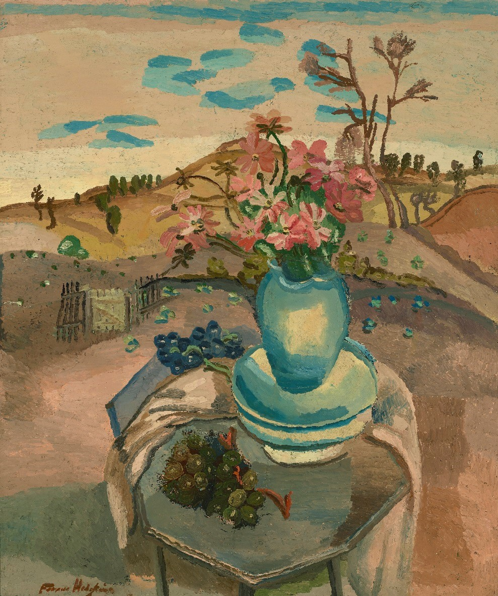

The brief
How can an ordinary object become a metaphor?
Make a related sequence of painted drawings in which an object develops a meaning beyond its everyday use. Begin with an observed subject, identify a conceptual possibility and use subsequent works to test, clarify and extend it. Each decision should make the next drawing necessary.
Materials & preparation
Your own object studies or photographs, sketchbook, acrylic or gouache, paper, and collage materials generated from your own drawings or marks.
Use your own drawings and photographs as starting points. Record sources and seek permission for people, places and culturally significant material. Discuss tikanga and context with your teacher where relevant.
Suggested size & quantity
Use these ranges to plan your studio time and materials with your teacher. They are classroom suggestions, not NZQA minimums, maximums or grade requirements. Adapt them to your idea, working pace and access needs.
Related sequence
Plan about 8–12 connected drawings or paintings in total: 4–6 A6–A5 alternatives, then 4–6 A4 developments that clarify and extend the idea. An A3 study is useful when a particular development needs more space.
Workbook
Allow about 8–10 A3 pages, or 16–20 A4 pages, including the sequence, original sources, relevant artist connections and short evaluations. Keep earlier alternatives visible so a viewer can trace the changes.
Using the range
Let the next work answer a question raised by the previous one. Change the suggested number or scale with your teacher when the idea needs it; making a large final painting does not replace the connected sequence.
One workbook page means one side of a sheet; a two-page spread counts as two pages. A3 is 297 × 420 mm, A4 is 210 × 297 mm, A5 is 148 × 210 mm and A6 is 105 × 148 mm. Two A4 pages offer about the same area as one A3 page for planning; this does not change any external submission format. Mount small studies or use clear photographs of separate works rather than making everything twice.
Artist connections
Choose the connections that serve your intention. The contemporary models offer different approaches; select a relevant comparison rather than studying every artist. These works are references, not assessment exemplars.
Track how an image or relationship can shift meaning when its surroundings change. Use a personally generated motif to develop, clarify and extend your own metaphor.
Shane Cotton
Contemporary Māori · Aotearoa New Zealand
Cotton reworks historical references to investigate bicultural identity and colonisation. Compare how recurring forms change meaning through placement, scale and surrounding space, while keeping their particular cultural histories in view.
Gow Langsford · artist profile and paintings · Painting investigation
Séraphine Pick
Contemporary · Aotearoa New Zealand
Pick’s atmospheric painting investigates memory, the body and states of consciousness. Compare how layered figures, shifts in colour and uncertain spaces can connect an external scene with an internal experience.
The Arts Foundation Te Tumu Toi · artist profile · Painting investigation
Lubaina Himid
Contemporary · Tanzania / United Kingdom
Himid’s 2026 paintings explore belonging and making a home through figures and imagined settings. Study how relationships between people, painted space and everyday activity can carry questions about identity and place.
British Council · 2026 British Pavilion guide (PDF) · Painting investigation
Frances Hodgkins
Aotearoa New Zealand / Britain
Look at how still-life objects and landscape can share a painted space. Try shifting the relationship between an object, its surroundings and its colour.
Christchurch Art Gallery · Still Life
Historical comparison

Artwork reproduction rights and assessment permission are different. A reusable image on this site is not automatically suitable for your assessed portfolio. Read the external conditions.
Studio sequence
Use this as a flexible route through the learning. Let the work suggest the next move.
Establish a starting idea
Draw an object from observation and brainstorm possible associations. Select a direction grounded in your experience. Investigate artist practices that offer a way to develop the relationship between object and setting.
Generate alternatives
Make small painted drawings that change the relationship, such as scale, placement or surroundings. Keep the object and central question connected across the trials.
Reflect and clarify
Compare the drawings and identify which visual decisions make your meaning clearer. Develop a selected direction in further works that adjust the confusing or weak aspects.
Extend the idea
Find an implication not yet explored. Change the object’s role, the viewpoint or the setting to pursue that implication. Show how the new work emerges from critical evaluation of the earlier work.
Make the sequence legible
Select and order related drawings to show the path of the idea. Retain the alternatives and brief decision notes. Do not hide useful developments beneath decorative workbook presentation.
A useful studio conversation
Put two related works side by side. Describe what changed, show the evidence and explain what you will investigate next. Invite feedback, then make your own decision.
Evidence checklist
Use this to review your work. Completing the list does not guarantee a grade.
0 of 3 evidence checks complete
Presentation & submission
Your teacher will confirm the assessment window, support available, final evidence and local authenticity procedures. This sheet is an original teaching resource; it is not an NZQA-issued assessment. Compare NZQA’s annotated exemplars.
What changes between grades?
Student-friendly guidance adapted from the standard. The whole body of relevant evidence determines the grade; the examples below illustrate possibilities.
| Grade | What the evidence needs to show |
|---|---|
| Achievement | Build on a connected idea through related drawings.In this task: Later works respond to the subject or concept established earlier. |
| Merit | Use analysis and reflection to make the idea clearer in subsequent work.In this task: A deliberate change strengthens the meaning or resolves a pictorial problem. |
| Excellence | Critically evaluate and take the idea into further possibilities.In this task: An established idea is developed into a new implication while remaining connected to the sequence. |
Authority: NZQA AS91316 achievement criteria and explanatory notes (PDF).
Watch for
Changing only the colours or enlarging the same composition may leave the idea undeveloped.
Pause & reflect
Where does the idea change rather than simply the appearance? Identify the earlier work that prompted that change.
These optional working notes belong to you. This website does not submit assessment evidence.
Notes and checkboxes can be saved in this browser. On a shared device, clear them before leaving.
Teacher notes
Teacher access
Enter the teacher password to open teaching notes and lesson plans.
Teacher access is unlocked for this tab.
Planning, assessment & differentiation
Judge the development visible across the series. Keep the distinction from 2.2 clear: technical skill alone is not evidence of extending an idea. Use 91316 annotated exemplars to discuss the difference between a cosmetic variation and a conceptual or pictorial extension.
Support and stretch
For teaching practice, reduce the number of simultaneous choices, model one material process and invite oral discussion alongside drawing. Offer vocabulary prompts and accessible media. To extend the learning, ask students to compare alternatives, justify a rejection or investigate a consequence of their own decision. Adapt assessed support to the standard’s conditions and any approved arrangements.
Before issuing the task
Set local start and finish dates, agree available materials and check the current standard, conditions and exemplars. Use school authenticity processes and your normal moderation procedures. Adjust this brief to the class and context; it has not been quality assured by NZQA.
Assessment window:
Teacher / class:
Checkpoint dates:
NZQA sources for this sheet
- AS91316 · official achievement standard (PDF)
- NZQA exemplars and assessment resources
- Visual Arts National Moderator’s Report
Checked 22 November 2026. This original task sheet interprets NZQA requirements for a painting classroom; official NZQA documents govern assessment.